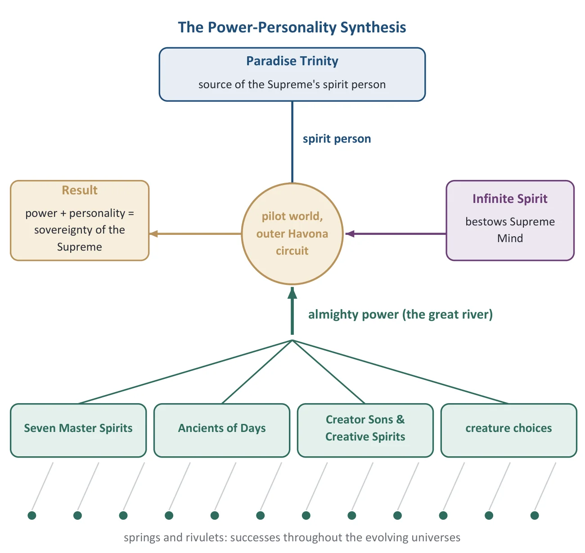
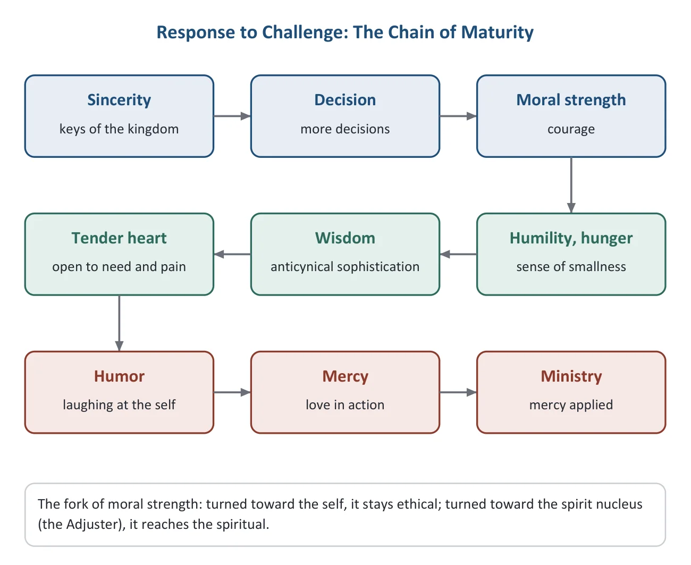

Original: La Historia Finita, capítulo II, La antítesis evolutiva (pp. 38–47)
Si la perfección de Havona es la tesis, los siete superuniversos, que comenzaron imperfectos, forman la vasta antítesis que se le opone. Sadler interpreta esta imperfección no como un defecto, sino como un espacio vacío en el que es posible el crecimiento. Dios el Séptuple es la respuesta de la Deidad a ese desafío, y el Ser Supremo evoluciona asimilando el poder que fluye de los logros de los Creadores Supremos. En la última parte del capítulo Sadler hace descender la cosmología al plano de la vida personal y se pregunta cómo responde un ser humano al desafío de Dios aquí y ahora.
En la presente edad del universo, el divino universo central es claramente la tesis creadora de la perfección. Los superuniversos, que comenzaron siendo imperfectos, son la vasta antítesis de la perfección de Havona. Sadler dice que estos universos imperfectos se convirtieron en el mayor desafío para las personalidades del Paraíso y de Havona que sirven como creadores y administradores de los dominios evolutivos. Llevar la perfección eterna y divina a dominios que por naturaleza son imperfectos y están en evolución es lo que Sadler llama la primera gran aventura, la «Aventura Suprema».
En El libro de Urantia, el sujeto de la «aventura suprema» suele ser la criatura que busca a Dios.
Esta sublime búsqueda del Dios de los universos es la aventura suprema de los habitantes de todos los mundos del tiempo y el espacio.1:0.6
Sadler invierte la expresión y ve también como una aventura la incursión de seres eternos en un mundo imperfecto.
Sadler declara abiertamente que este estudio propone un punto de vista particular: que Dios posee cualidades de ser que son «ancestrales» respecto de la alegría de la aventura que se observa en el carácter de las criaturas que progresan, respecto de su tendencia a responder al estímulo de un desafío. De otro modo, ¿por qué habría presentado Él de pronto ante el sistema Paraíso-Havona, de perfección eterna, el asombroso desafío de la profunda imperfección de los siete superuniversos?
En la primera edad del universo todo estaba en equilibrio; jamás se habían conocido la desarmonía ni el desorden. Luego Dios extiende esta creación hacia fuera, en el espacio. El universo pasa ahora a incluir dominios aún no establecidos físicamente, dominios donde aparecerán criaturas imperfectas, dominios donde incluso pueden surgir el mal y el pecado a causa de sus elecciones imprudentes. ¿Cómo habrán reaccionado unos seres que solo habían conocido la armonía cuando vieron por primera vez el desorden y contemplaron por primera vez cómo el mal potencial se convertía en mal real por las elecciones de las criaturas? Sadler invita al lector a detenerse e imaginarlo.
Cada criatura de esta nueva creación recibió de Dios el inestimable poder de elección. Según la expresión de Sadler, cada criatura es soberana dentro de sí misma. Decide por sí misma si llegar a ser ciudadana del universo, si llegar a ser hijo de Dios, y nadie puede inmiscuirse en esa elección, porque Aquel que otorgó el poder es Dios. Sin este don de la personalidad no seríamos más que máquinas vivientes. Gracias a este libre albedrío (relativo) podemos elegir llegar a ser hijos ascendentes de Dios, o podemos seguir eligiendo equivocadamente.
Sadler se maravilla aquí ante la audacia de Dios. Unir el espíritu más puro con el hombre mortal, la criatura más baja capaz de recibir personalidad, y buscar una asociación eterna con hijos de razas de origen animal: solo un Dios que combina el espíritu de aventura con el amor divino podría emprender semejante cosa.
Dios el Séptuple es la respuesta de la Deidad al desafío de la imperfección. Al mismo tiempo, por medio de los autootorgamientos de los Hijos del Paraíso como criaturas, Dios el Séptuple lleva un contradesafío, la perfección divina misma, hasta el núcleo más íntimo de los dominios en evolución, hasta los propios mundos habitados.
En este capítulo Sadler reorganiza a Dios el Séptuple desde el punto de vista de la función: tres grupos que interactúan dentro de los siete niveles, a saber, los Creadores Supremos, el Ser Supremo y la Deidad trina del Paraíso. Los seres cooperadores de estos tres grupos obran en el tiempo y el espacio a través de los niveles potencial, asociativo, creador y evolutivo. Y gracias a sus éxitos en los universos en evolución, el Ser Supremo va evolucionando lentamente como Deidad experiencial.
En el capítulo anterior la Deidad entró en el cuarto nivel, el creador. Ahora Sadler encuentra a la Deidad obrando en el quinto nivel, el evolutivo.
5. Evolutivo — Deidad autoexpansiva e identificada con la criatura.0:1.8
El Ser Supremo está evolucionando. En el alba de la segunda edad comienza como persona espiritual en Havona. Luego, cada vez que los Creadores Supremos logran perfeccionar la creación imperfecta, incluidos mundos como el nuestro, él crece y evoluciona.
Sadler compara este proceso con un río. Los éxitos de los Creadores Supremos y de sus coordinados, asociados y subordinados son como incontables manantiales y arroyuelos. Estos se reúnen en riachuelos, los riachuelos en corrientes mayores y las corrientes en los afluentes de un gran río. Este «gran río» del logro divino en el tiempo y el espacio es lo que El libro de Urantia llama el poder experiencial del Supremo Todopoderoso.
Esta relación asociativa de Deidad está ahora expandiéndose creativamente hacia afuera en Dios el Séptuplo y se está sintetizando en el poder experiencial del Supremo Todopoderoso en el gran universo.0:7.7
Como un río que desemboca en el mar, este poder todopoderoso que se va reuniendo se une a la persona espiritual del Supremo en Havona. Aquí se encuentra la fuente del creciente poder soberano del Supremo. Habiendo comenzado como una personalidad espiritual enteramente desprovista de poder soberano, el Supremo crece gradualmente hasta llegar a ser el soberano experiencial de los siete superuniversos.
Los propios Creadores Supremos, y en especial los Hijos Creadores y los Espíritus Creativos, también evolucionan. Sadler resume la diferencia entre creación y evolución en una sola palabra: tiempo. La creación sucede en un instante; la evolución hace más lento el proceso de transmutación para que las criaturas puedan comprender lo que está ocurriendo y tomar parte consciente en su propio crecimiento. Es la diferencia entre recibir una fotografía y pintar juntos un cuadro.
El Ser Supremo no se limita a recibir pasivamente estos esfuerzos. Según Sadler, se extiende hacia los niveles creador y asociativo para llevar a la actualidad los potenciales de las Deidades del Paraíso y, al identificarse con cada criatura que crece, se lleva gradualmente a sí mismo a la actualidad.
Nacidos en la segunda edad, damos por sentados el crecimiento evolutivo y la experiencia finita, pero, vistos desde una perspectiva más amplia, estos pertenecen de manera exclusiva a nuestra propia edad del universo, la edad en que el Supremo está creciendo. Él crece porque nosotros crecemos, y nosotros podemos crecer porque crecemos dentro de él. Sadler nos pide que imaginemos el gran universo como el escenario en el que evoluciona el Ser Supremo. Nuestro crecimiento tiene lugar dentro de él, y el suyo dentro de nosotros; el proceso va en ambos sentidos.
También sostenemos que este tipo de crecimiento es peculiar a la edad de crecimiento del Supremo, y que terminará cuando se complete el crecimiento del Supremo.117:2.2
Otras edades tendrán también experiencia, pero será una experiencia posfinita o superfinita. Cuando el crecimiento del Supremo haya concluido y emerja como una Deidad a la que todos podamos conocer, la oportunidad de participar en ese crecimiento, la posibilidad misma de la experiencia finita, llegará también a su fin. Por eso Sadler valora tanto la edad presente.
Los seres humanos comienzan en el peldaño más bajo de la vida de las criaturas finitas. Empezando como poco más que animales, reciben la oportunidad de elevarse por crecimiento evolutivo hasta el alto estado de finalista. Sadler lo expresa como una paradoja: porque comenzamos en lo más bajo, nuestra oportunidad es la mayor; porque comenzamos con lo mínimo, podemos contener lo máximo.
Aquí Sadler recurre al Tao Te Ching de Lao-Tsé y a su enseñanza de que una vasija es útil porque está vacía. Así como la virtud de una vasija reside en su capacidad de ser llenada, la virtud de la imperfección reside en su capacidad de ser llenada con la experiencia de crecer conscientemente hacia la perfección. Es precisamente la imperfección de la creación espacio-temporal la que hace posible tal crecimiento. Si los superuniversos hubieran sido creados perfectos desde el principio, habrían sido una mera extensión de la creación central, otra Havona a mayor escala.
… y el Supremo tan sólo podría conocer el crecimiento y el desarrollo como consecuencia de la parcialidad de existencia y la incompletez de la naturaleza, la no absolutez del ser.115:7.1
Este espacio vacío es también una oportunidad para quienes han descendido de lo alto. Las necesidades mismas de los superuniversos, su falta de perfección, abren nuevas oportunidades de crecimiento a las personalidades del Paraíso-Havona. Ellas mismas crecen en el servicio ampliado de ayudarnos a alcanzar las alturas de la perfección divina de las que descendieron.
Es el Supremo quien establece el patrón de crecimiento de la segunda edad. Como soberano todopoderoso que ahora emerge sobre los superuniversos, extrae poder de lo que hacen y logran los Creadores Supremos, y de los actos de todos los que viven en los universos del tiempo y el espacio. Cuando sus actos son malos, su crecimiento se ve obstaculizado; cuando son buenos, su crecimiento se amplía.
EN LA MEDIDA en que nosotros hagamos la voluntad de Dios en cualquiera de las estaciones universales en las que vivamos nuestra existencia, en esa misma medida el potencial todopoderoso del Supremo se acercará un paso más al actual.117:0.1
El modo en que el Supremo crece en el tiempo y el espacio depende de la afluencia del poder todopoderoso. Y este poder que se va reuniendo se une a la persona espiritual del Supremo en Havona por la acción de la mente otorgada al Ser Supremo. El libro de Urantia llega incluso a nombrar el lugar.
Las realidades de personalidad del Ser Supremo vienen de las Deidades del Paraíso y en el mundo piloto del circuito exterior de Havona se unifican con las prerrogativas de potencia del Supremo Todopoderoso que vienen de las divinidades Creadoras del gran universo.56:6.2
Lo que Sadler subraya puede decirse en una sola frase: por la acción unificadora de la mente, el poder se hace uno con la personalidad espiritual y queda bajo su control. Sadler llama a este principio de crecimiento la «síntesis poder-personalidad» y dice que la encontraremos una y otra vez a lo largo de El libro de Urantia.
Esta unión del poder creativo de los Creadores Supremos con los potenciales creativos de la Trinidad es la fuente misma de la actualidad del Ser Supremo.17:2.2

Según Sadler, en los universos del tiempo y el espacio la energía-materia arranca primero y es dominante, mientras que el espíritu todavía lucha por alcanzar el dominio. El espíritu por sí solo carece de poder; se necesita la mente para dominar la materia. Y solo la mente personal puede dominar la energía-materia y aun así elegir someterse al espíritu. La mente que rechaza la guía del espíritu no perdurará, al final, por mucho tiempo.
Sadler toma como ejemplo el mundo actual. Hemos dominado muchas de las fuerzas y secretos de la naturaleza, y tenemos miedo. Recordar las armas nucleares de los años de la Guerra Fría en que se escribió el libro da a la observación un peso aún mayor.
A la pregunta «¿Cómo pueden los mansos heredar la tierra?», Sadler responde que solo los mansos pueden heredar la tierra y conservar esa herencia. Tal persona mansa, por supuesto, debe ser primero fuerte. Cuando los fuertes son mansos, su fuerza no atemoriza a nadie; cuando no son mansos, engendran temor, y ese temor acaba suscitando una contrafuerza mayor, una alianza de los atemorizados, que los derriba.
«Bienaventurados los mansos, porque ellos recibirán la tierra por heredad.140:3.5
Así resume Sadler el desafío de crecimiento de la edad presente: ¿podemos dominar la creación física por medio de la mente y luego, por la elección de la personalidad, poner esa mente victoriosa bajo el control del espíritu? Si podemos, llegamos a ser personas a la vez fuertes y mansas. La síntesis poder-personalidad del Ser Supremo se repite en miniatura en una vida individual.
En la última sección del capítulo Sadler pasa de la cosmología a la espiritualidad personal. Su punto de partida es lo que El libro de Urantia dice acerca de las llaves del reino de los cielos.
Las llaves del reino de los cielos son: sinceridad, más sinceridad, y más sinceridad. Todos los hombres poseen estas llaves. Los hombres las usan —avanzan en estado espiritual— mediante decisiones, más decisiones y más decisiones.39:4.14
Sadler lee esta enseñanza como si otorgara un gran valor primero a la honestidad y luego al valor, la fuerza moral del carácter. Ejercer el valor moral y tomar decisiones morales edifica la fuerza moral. ¿Hacia dónde se dirige, entonces, esa fuerza? Si se vuelve hacia dentro, hacia el yo, todo se pierde; en el mejor de los casos se queda en el nivel ético. Pero si se vuelve hacia dentro, hacia el núcleo espiritual de la persona, el Ajustador, todo se gana. La moralidad se extiende entonces hacia lo espiritual y va más allá de la ética.
La búsqueda de Dios comienza con un hambre del corazón humano, y esa hambre brota de la humildad de reconocer la propia pequeñez. Sadler llama a esto, que sucede cuando una persona fuerte sopesa la voluntad humana frente a la voluntad de Dios, el triunfo de la mansedumbre sobre el orgullo.
En este punto Sadler representa el crecimiento de una persona hacia la madurez como una especie de cadena. Cuando a la fuerza moral se añaden la humildad, el hambre y la mansedumbre, crece una sabiduría relativa y esa madurez generosa que Sadler llama una «sofisticación anticínica». La fe sabia y semejante a la de un niño de tal persona es enteramente distinta de la presunción ciega de una fe ignorante e infantil.
Esta perspicacia no produce sentimentalismo, sino un corazón tierno que responde en la práctica a las necesidades de los demás. Puesto que la capacidad de sentir la necesidad es la misma que la capacidad de sentir dolor, un corazón tierno está expuesto a ser herido. Con el tiempo, la ternura, la humildad y la perspicacia se funden y florecen en un humor rico. Cuando somos conscientes a la vez de la infinitud de Dios y de nuestra propia pequeñez, crece un humor que se vuelve contra el yo siempre hambriento, y quienes saben reírse de sí mismos aprenden a vivir en paz consigo mismos.
Una persona en quien el humor y la sabiduría se han fundido con la compasión y la comprensión puede consolar eficazmente a los demás y, al consolar, desarrolla la capacidad de aceptar el mismo ministerio de comprensión y de beneficiarse de él. Sadler dice que esa comprensión bondadosa y madura se convierte en el fundamento de la verdadera misericordia. El libro de Urantia enseña que la misericordia no es algo simple, sino una cualidad de crecimiento que se desarrolla por etapas.
… aún ahora deberías comprender que la misericordia es una calidad de crecimiento. Deberías darte cuenta de que hay una gran recompensa de satisfacción personal en ser primero justo, luego recto, a continuación paciente y finalmente comprensivo.28:6.8
La misericordia es amor en acción, pero amor hecho sabio y perspicaz por la comprensión que da la experiencia. Y la misericordia efectivamente aplicada es ministerio.
La misericordia es amor aplicado, es el amor del Padre en acción en la persona de su Hijo Eterno.6:3.5
Dios es amor, el Hijo es misericordia, el Espíritu es ministerio …8:4.2

Sadler añade que la eficacia del ministerio depende no solo del desinterés del amor, sino también de la sabiduría que contiene. Un dar torpe puede dejar un beneficio espiritual al que da, y sin embargo no hacer nada en absoluto por aquel a quien se ayuda. El dar verdaderamente constructivo requiere que la sabiduría, el humor, la experiencia y el amor obren juntos, y la persona que da de este modo se convierte, según la expresión de Sadler, en alguien que está «librando la paz».
Tal persona no teme vivir en la tierra como ciudadana consciente del universo. Sadler añade, sin embargo, una salvedad: una seguridad interior tan fuerte solo es segura cuando está unida a la sinceridad y la humildad, y cuando el yo se mantiene a raya mediante un vivo sentido del humor.
Por eso, conjetura Sadler, Jesús pronunció las bienaventuranzas ante los doce apóstoles. La felicidad de los pobres de espíritu, de los que lloran, de los mansos, de los que tienen hambre de rectitud, de los misericordiosos, de los puros de corazón y de los perseguidos coincide con la cadena de madurez descrita más arriba. Sadler cita el Evangelio de Mateo, pero El libro de Urantia presenta la misma escena como el sermón de la ordenación [140:3].
«Bienaventurados los limpios de corazón, porque ellos verán a Dios.140:3.6
Para Sadler, el desafío de Dios no es algo lejano o teórico, sino lo más práctico que uno puede conocer en esta vida. El desafío, la respuesta y el crecimiento que resulta de ellos son todos «aquí y ahora». El desafío del Dios que habita la eternidad se encuentra siempre en el «ahora» siempre presente, y lo respondemos no con lamentos por el pasado ni con propósitos para el futuro, sino con las decisiones y acciones que tomamos ahora.
El Padre Universal nos ha provisto generosamente de lo que necesitamos para responder a este desafío: el poder de elección que viene con la personalidad, y el Ajustador, nuestro núcleo espiritual y guía hacia el Paraíso. Habiéndonos dotado así, nos desafía grandemente y observa con paciencia para ver lo que haremos.
Dios el Padre es el otorgador y el conservador de toda personalidad.5:6.1
Dios lo pide todo a cada persona, pero ese «todo» guarda siempre proporción con la capacidad de dar. Sadler recuerda la escena junto al mar en la que Jesús resucitado preguntó a Juan y a Pedro: «¿Me amas?», preguntó a Andrés: «¿Confías en mí?» y preguntó a Tomás: «¿Me sirves?» [192:2]. El desafío está siempre ajustado al individuo.
Siempre el Actor Conjunto «toma nota del hombre, en qué forma nació».28:6.2
Al final, la pregunta que Sadler nos deja es sencilla. Dios nos ha enriquecido y nos desafía a usar nuestros «talentos» para que den fruto para nosotros mismos y para Su creación. Pero, sobre todo, nos desafía con un amor infinito tan intenso que podría cegarnos. A este amor, que podemos sentir aun donde no podemos comprender, ¿cómo responderemos aquí y ahora?
Los números de párrafo de El libro de Urantia que Sadler añade en esta sección no siempre corresponden exactamente al contenido. La referencia 5:6.1, colocada al final del párrafo sobre Dios que nos equipa y nos desafía, trata del Padre como otorgador de toda personalidad. En 28:6.2 el sujeto de «toma nota del hombre, en qué forma nació» es el Actor Conjunto. Tales citas se leen mejor como hilos para la reflexión que como textos probatorios literales.